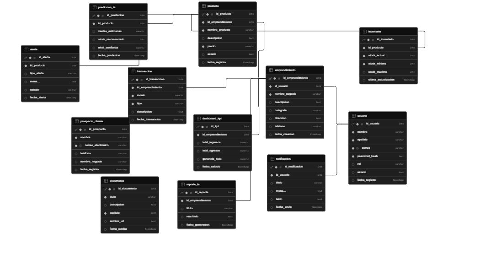

Marco Introductorio del Proyecto
Este capítulo presenta el contexto general del sistema, el problema identificado bajo el enfoque ABR, y los objetivos planteados para el desarrollo de la plataforma.
1.1 Introducción y Contexto Tecnológico
En el entorno económico actual, los microemprendimientos locales representan uno de los pilares más fundamentales para la generación de empleo y el dinamismo social. No obstante, la gran mayoría de estos negocios carece de herramientas informáticas accesibles y avanzadas que les permitan estructurar, analizar y optimizar sus flujos de caja, gestión de inventarios y captación de clientes.
El presente proyecto describe la conceptualización, diseño e implementación de un "Sistema Web de Monitoreo y Control de Microemprendimientos Locales Implementando Inteligencia Artificial". Esta plataforma tiene el propósito de democratizar el uso de tecnologías de Business Intelligence (BI) y analítica predictiva, proporcionando un panel de control intuitivo y automatizado que actúe como un consultor financiero y operativo digital para el microempresario.
Las microempresas suelen enfrentarse a problemas críticos como el quiebre de stock o la falta de previsión en sus ingresos mensuales, lo que eleva drásticamente su tasa de mortalidad operativa durante los primeros años de vida. La ausencia de un registro estructurado de datos impide que estos negocios identifiquen patrones de compra o predigan con exactitud cuándo deben reabastecer sus almacenes, dejándolos en una situación de vulnerabilidad frente a competidores de mayor escala.
1.2 Planteamiento del Problema
Las microempresas locales se enfrentan de manera reiterada a altas tasas de mortalidad operativa durante sus primeros dos años de vida. Esta problemática surge principalmente por la falta de un control riguroso de sus datos de transacciones financieras y la incapacidad para anticipar fluctuaciones de la demanda o desabastecimientos de stock. La gestión se realiza de forma empírica o mediante registros manuales propensos a errores.
1.2.1 Formulación de la Pregunta Esencial bajo Enfoque ABR
¿De qué manera un sistema web integrado con modelos de inteligencia artificial predictiva puede mitigar los errores de gestión operativa y financiera en los microemprendimientos locales, garantizando la trazabilidad de datos y la automatización de la toma de decisiones estratégicas?
1.3 Objetivos del Proyecto
1.3.1 Objetivo General
Desarrollar e implementar un sistema web integral de monitoreo y control operativo para microemprendimientos locales mediante la incorporación de módulos analíticos basados en inteligencia artificial, con el fin de optimizar la toma de decisiones financieras, predecir el comportamiento del inventario y reducir el índice de fallas de gestión en el mercado local.
1.3.2 Objetivos Específicos Operacionales
- Diseñar un módulo web de autenticación y registro de datos comerciales que permita capturar transacciones de ingresos y egresos de forma segura y estructurada.
- Desarrollar un motor analítico basado en Inteligencia Artificial que procese el historial de ventas para generar predicciones automáticas de demanda de stock.
- Implementar un panel de control interactivo (Dashboard) que visualice indicadores clave de rendimiento (KPIs) financieros y de inventario en tiempo real.
Marco Teórico
Fundamentos conceptuales del sistema, de la metodología aplicada y de las reglas de negocio del sector que sustentan el diseño de la plataforma.
2.1 Definiciones Enfocadas al Sistema
De acuerdo con Roger Pressman en su obra "Ingeniería del Software: Un Enfoque Práctico", un sistema basado en web es una aplicación que evolucionó desde un conjunto de archivos hipermediales estáticos hasta sistemas complejos que ejecutan lógica de negocio, interactúan con bases de datos corporativas y proveen interfaces dinámicas al usuario final. La taxonomía de esta solución se clasifica como una Aplicación Web Orientada a Datos y Análisis Predictivo.
Asimismo, Ian Sommerville establece en "Ingeniería de Software" que los sistemas críticos de información deben garantizar propiedades de fiabilidad, disponibilidad y seguridad. El sistema implementa este enfoque distribuyendo las responsabilidades mediante servicios desacoplados que procesan algoritmos de Machine Learning (IA) para la interpretación de tendencias mercantiles.
2.2 Definiciones Enfocadas a la Metodología
- Metodologías Ágiles (Scrum): marco de trabajo que promueve el desarrollo incremental y evolutivo a través de iteraciones cortas llamadas Sprints. Permite adaptar el software basándose en el feedback directo de los microempresarios.
- UML (Lenguaje de Modelado Unificado): lenguaje estandarizado para visualizar, especificar, construir y documentar los artefactos de un sistema de software. Se aplican los Diagramas de Casos de Uso para representar los requerimientos funcionales desde la perspectiva del actor (usuario).
- Ingeniería de Requisitos: proceso técnico que comprende el descubrimiento, análisis, especificación y verificación de los servicios que debe proporcionar el sistema y las restricciones bajo las cuales operará.
- Modelo Entidad-Relación (DER): técnica de modelado lógico de datos que describe las estructuras de información globales que serán mapeadas en un motor de base de datos relacional, definiendo entidades, atributos claves (PK/FK) y cardinalidades.
2.3 Definiciones Enfocadas al Problema y Reglas de Negocio del Sector
- Flujo de Caja (Cash Flow): registro continuo y cronológico de los flujos de entrada (ventas, aportes) y salida (compras, servicios) de dinero en efectivo.
- Punto de Reorden (Reorder Point): nivel mínimo de existencias de un producto que indica la necesidad inmediata de realizar un nuevo pedido de reabastecimiento.
- Predicción por IA (Pronóstico de Demanda): algoritmo predictivo que utiliza regresiones lineales y series temporales para estimar el volumen de ventas futuro de un artículo basándose en registros históricos.
- Regla de Negocio 1: un microemprendimiento solo puede visualizar y editar sus propios registros transaccionales e inventarios.
- Regla de Negocio 2: el sistema generará una alerta automática de stock crítico cuando el inventario físico sea menor o igual al punto de reorden calculado por el algoritmo de IA.
Marco de Desarrollo
Documentación técnica completa: ingeniería de requisitos, modelado de comportamiento y datos, y arquitectura del sistema.
3.1 Ingeniería de Requisitos
3.1.1 Requisitos Funcionales
| Código | Especificación |
|---|---|
| RF-01 | Registro de Ventas: el Sistema Web permitirá registrar una nueva transacción de venta, ingresando el monto, descripción, fecha y categoría obligatoriamente. |
| RF-02 | Predicción por IA: el Sistema Web calculará automáticamente las predicciones de demanda de inventario cuando el usuario presione el botón de optimización de IA. |
| RF-03 | Gráfico Analítico: el Sistema Web desplegará un gráfico interactivo de flujo de caja filtrado por rangos mensuales o anuales. |
| RF-04 | Alertas de Stock: el Sistema Web enviará una alerta de notificación visual cuando el inventario físico caiga por debajo del punto de reorden. |
| RF-05 | Captura de Leads: el Sistema Web permitirá capturar los datos de contacto de clientes potenciales a través de un formulario de suscripción en la Landing Page. |
.png)
3.1.2 Requisitos No Funcionales (Seguridad e Infraestructura)
| Código | Especificación |
|---|---|
| RNF-01 | Seguridad: el sistema debe cifrar todas las contraseñas de los usuarios en la base de datos utilizando el algoritmo de hash bcrypt. |
| RNF-02 | Infraestructura/Disponibilidad: la interfaz estática y de captación del sistema (Landing Page) debe estar alojada e integrada continuamente en la infraestructura pública de GitHub Pages con un tiempo de actividad del 99.9%. |
3.1.3 Matriz de Priorización MoSCoW (Delimitación del MVP)
| Categoría MoSCoW | Requisitos Asignados / Descripción del MVP |
|---|---|
| Must Have (Obligatorio) | RF-01 (Registro de transacciones), RF-05 (Formulario de captación en Landing Page), RNF-01 (Cifrado). |
| Should Have (Debería) | RF-02 (Cálculo predictivo por IA de stock), RF-03 (Gráficos interactivos de flujo de caja). |
| Could Have (Podría) | RF-04 (Alertas visuales automatizadas en pantalla). |
| Won't Have (Futuro) | Integración directa con pasarelas de pago bancarias locales en tiempo real. |
3.1.4 Matriz de Trazabilidad de Requisitos (RTM)
Ver detalle completo en la pestaña "Matriz RTM Ajustada".
3.2 Modelado de Comportamiento y Persistencia de Datos
3.2.1 Diagrama de Casos de Uso UML (Estructura de Dependencias e Inclusiones)
El actor principal es el Microempresario, quien interactúa con el "Sistema Emprende Ahora" a través de tres módulos:
- Módulo CashFlow (Control Financiero): CU-01 Registrar Transacción (Ingreso/Egreso), que incluye «include» CU-01.1 Validar Datos de Entrada y CU-01.2 Actualizar Balance Global en Pantalla. Persiste el registro en SQL.
- Módulo Predictor IA (Inventarios): CU-02 Ejecutar Optimización de Stock Avanzada, que incluye CU-02.1 Consultar Historial Transaccional y CU-02.2 Recalcular Límites y Punto de Reorden, procesados por el componente externo Predictor_Engine_IA. CU-03 Visualizar Gráficos y Dashboards extiende «extend» a CU-04 Lanzar Alerta Visual de Stock Crítico bajo la condición
stock_actual <= punto_reorden. - Módulo Landing Page (Captura): CU-05 Registrar Lead Interesado, que incluye CU-05.1 Validar Sintaxis de Email (Regex), insertando un lead único en la Base de Datos.

3.2.2 Escenario de Éxito del Flujo Crítico (Motor Analítico Predictivo RF-02)
- El Microempresario ingresa al panel de control y selecciona la opción "Optimizar con IA".
- El sistema realiza una llamada asíncrona al servicio de IA solicitando las métricas predictivas.
- El motor de IA analiza los registros históricos de la entidad "Transaccion".
- El sistema calcula el volumen proyectado de ventas y actualiza el punto de reorden en la entidad "Inventario".
- El sistema despliega el reporte predictivo visual en la pantalla sin errores.

3.2.3 Diagrama Entidad-Relación Lógico (DER)
El modelo lógico contempla cuatro entidades principales: EMPRENDIMIENTO (id_emprendimiento PK, nombre_negocio, sector, ciudad), INVENTARIO (id_producto PK, id_emprendimiento FK, nombre_producto, stock_actual, punto_reorden), TRANSACCION (id_transaccion PK, id_emprendimiento FK, monto, tipo, fecha_transaccion, descripcion) y PROSPECTO_CLIENTE (id_prospecto PK, nombre, correo_electronico, fecha_registro). Un EMPRENDIMIENTO posee (1..*) registros de INVENTARIO y registra (1..*) registros de TRANSACCION.

3.2.4 Diccionario de Datos del Sistema
Tabla: TRANSACCION
| Campo | Tipo | Llave | Restricción | Descripción |
|---|---|---|---|---|
| id_transaccion | INT | PK | AUTO_INCREMENT, NOT NULL | Identificador único de transacción. |
| id_emprendimiento | INT | FK | NOT NULL | Vínculo relacional con la tabla EMPRENDIMIENTO. |
| monto | DECIMAL(10,2) | — | NOT NULL | Valor monetario de la operación financiera. |
| tipo | ENUM('INGRESO','EGRESO') | — | NOT NULL | Determina la naturaleza del flujo financiero del negocio. |
| fecha_transaccion | DATETIME | — | NOT NULL | Sello de fecha y hora exacta de ejecución del movimiento. |
| descripcion | TEXT | — | NULL | Detalle opcional sobre el origen del ingreso o egreso. |
Tabla: PROSPECTO_CLIENTE
| Campo | Tipo | Llave | Restricción | Descripción |
|---|---|---|---|---|
| id_prospecto | INT | PK | AUTO_INCREMENT, NOT NULL | Identificador único del lead interesado capturado. |
| nombre | VARCHAR(100) | — | NOT NULL | Nombre completo del microempresario registrado. |
| correo_electronico | VARCHAR(150) | — | UNIQUE, NOT NULL | Email de contacto validado desde la interfaz web. |
| fecha_registro | TIMESTAMP | — | DEFAULT CURRENT_TIMESTAMP | Fecha en la que el lead fue capturado. |
3.3 Arquitectura de Software y Diseño de Interfaces de Usuario (UX)
3.3.1 Diagrama de Arquitectura Lógica en Capas
- Capa de Presentación (Frontend): desarrollada en HTML5, CSS3 y JavaScript moderno, encargada de la renderización del Dashboard e interfaces. Se representa de forma inicial a través de la Landing Page de captura.
- Capa de Lógica de Negocio (Backend): servidor que procesa las peticiones lógicas, ejecuta las reglas de negocio, valida los datos y conecta directamente con el motor analítico de Inteligencia Artificial.
- Capa de Datos (Persistencia): motor de base de datos relacional donde residen de forma íntegra las tablas normalizadas mapeadas en el DER.
3.3.2 Correspondencia de Campos y Trazabilidad (Formulario UI vs. Atributos DER)
Para garantizar la trazabilidad de la información, el formulario de suscripción de la Landing Page conecta de manera unívoca sus campos de entrada con los atributos del DER:
- Campo de Texto UI: "Nombre Completo del Emprendedor" → mapea a
PROSPECTO_CLIENTE.nombre(VARCHAR). - Campo de Entrada UI: "Correo Electrónico de Contacto" → mapea a
PROSPECTO_CLIENTE.correo_electronico(VARCHAR). - Acción del Botón UI: "Solicitar Demostración de IA" → desencadena la instrucción
INSERT INTO PROSPECTO_CLIENTEen la Capa de Datos.
Enlaces del Proyecto
📁 Repositorio de GitHub: github.com/eatedannerfidelcondorica-ai/emprende-proyecto-sistemas
🌐 Landing Page en Producción: eatedannerfidelcondorica-ai.github.io/emprende-proyecto-sistemas
Matriz de Trazabilidad de Requisitos Ajustada
Relación completa entre objetivos específicos, requisitos funcionales, casos de uso, entidades del DER y componentes de formulario.
| Objetivo Específico | RF | Caso de Uso (UML) | Entidad DER | Componente Formulario |
|---|---|---|---|---|
| Obj. Específico 1 | RF-01 | CU-01: Registrar Transacción | Transaccion | Formulario Transacciones (Monto, Tipo) |
| Obj. Específico 2 | RF-02 | CU-02: Generar Predicción IA | Prediccion / IA_Model | Botón "Optimizar con IA" |
| Obj. Específico 3 | RF-03 | CU-03: Visualizar Dashboard | Transaccion / Reporte | Dashboard / Canvas Gráfico |
| Obj. Específico 3 | RF-04 | CU-04: Monitorear Alertas | Inventario | Panel de Alertas de Stock |
| Obj. Específico 4 | RF-05 | CU-05: Capturar Interesado | Prospecto_Cliente | Formulario Landing Page (Email, Nombre) |
Matriz MoSCoW Asociada
| Categoría | Requisitos |
|---|---|
| Must Have | RF-01, RF-05, RNF-01 |
| Should Have | RF-02, RF-03 |
| Could Have | RF-04 |
| Won't Have | Integración con pasarelas de pago bancarias locales |